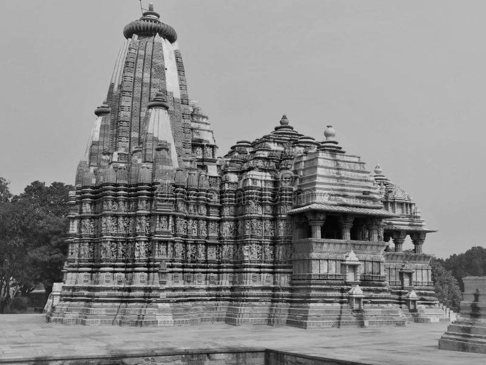

The Khajuraho Group of Monuments are a group of Hindu and Jain temples in Chhatarpur district, Madhya Pradesh, India, about 175 kilometres southeast of Jhansi. They are a UNESCO World Heritage Site.The temples are famous for their nagara-style architectural symbolism and a few erotic sculptures.
Most Khajuraho temples were built between 885 AD and 1000 AD by the Chandela dynasty. Historical records note that the Khajuraho temple site had 85 temples by the 12th century, spread over 20 square kilometers. Of these, only about 25 temples have survived, spread over six square kilometers. Of the surviving temples, the Kandariya Mahadeva Temple is decorated with a profusion of sculptures with intricate details, symbolism and expressiveness of ancient Indian art. The temple complex was forgotten and overgrown by the jungle until 1838 when Captain T.S. Burt, a British engineer, visited the complex and reported his findings in the Journal of the Asiatic Society of Bengal.

History
The Khajuraho group of monuments was built during the rule of the Chandela dynasty. The building activity started almost immediately after the rise of their power, throughout their kingdom to be later known as Bundelkhand. Most temples were built during the reigns of the Hindu kings Yashovarman and Dhanga. Yashovarman's legacy is best exhibited by the Lakshmana Temple. Vishvanatha temple best highlights King Dhanga's reign.22 The largest and currently most famous surviving temple is Kandariya Mahadeva built in the reign of King Vidyadhara. The temple inscriptions suggest many of the currently surviving temples were complete between 970 and 1030 AD, with further temples completed during the following decades.
The Khajuraho temples were built about 35 miles from the medieval city of Mahoba, the capital of the Chandela dynasty, in the Kalinjar region. In ancient and medieval literature, their kingdom has been referred to as Jijhoti, Jejahoti, Chih-chi-to and Jejakabhukti. The first documented mention of Khajuraho was made in 641 by Xuanzang, a Chinese pilgrim who described encountering several dozen inactive Buddhist monasteries and a dozen Hindu temples with a thousand worshipping brahmins. In 1022 CE, Khajuraho was mentioned by Abu Rihan-al-Biruni, the Persian historian who accompanied Mahmud of Ghazni in his raid of Kalinjar; he mentions Khajuraho as the capital of Jajahuti. The raid was unsuccessful, and a peace accord was reached when the Hindu king agreed to pay a ransom to Mahmud of Ghazni to end the attack and leave.